Chapter 8 Does It Really Matter to Test First or Test After?
In my experience, the world of software is an opinionated one. It seems like everyone has special tools, techniques, practices, and packages that they swear by. In this lesson, we will investigate one of these classic claims: Which is better? Test-first or test-last development? We will also explore what it looks like when people misattribute benefits to a specific practice, when in reality the cause is entirely different. The study we are using is: A Dissection of the Test-Driven Development Process: Does It Really Matter to Test-First or to Test-Last?(Fucci et al., 2016) Below is an excellent quote from the paper, highlighting how statistics can separate the relevant findings from other distracting factors:
This information can liberate developers and organizations who are interested in adopting TDD, and trainers who teach it, from process dogma based on pure intuition, allowing them to focus on aspects that matter most in terms of bottom line.
“Design Thinking” model emphasizes the iterative dynamic of creating something useful
8.1 Test-Driven Development Process
- what is it?
- why do people care?
8.2 The Study
- beyond their very complex design
- granularity, uniformity, sequencing, and refactoring
- test-first, test-last
8.3 Modeling Recipe
Here is a little recipe for modeling:
Define the outcome variable(s) that you care about
Define the factors that might affect (1); be willing to iterate!
Determine which kind of model can explain the data we see:
lm,glm,chisq,anovaetc.Keep it as simple as possible, and try to include as few features and interactions as you can. simpler is better, without underfitting
Determine an appropriate metric to evaluate the model:
rmse,R^2,AIC,BIC, etc.Compare models to find the model with a nice balance between simplicity and goodness of fit.
Continue to ask yourself; does this model actually make sense in the world? Even if it mathematically fits really well, is it plausible?
If so, then you have a very reasonable model! If you can, test it on new data, or perform an experiment that confirms your hypothesis.
Without experimentation, you cannot know anything about causality. Instead, your model provides a representation of the phenomenon and the factors involved.
8.4 Outcomes We Care About
Which subset of the factors best explain the variability in external quality?
So basically this question is asking “what combo of variables contributes to making stuff good?”
With any measure, we have to operationalize it in some way. “Code Quality” is defined as: 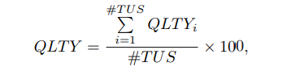, with QLTYi defined as: 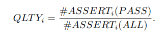
Don’t panic. I’ve actually wanted to do a research study where I use eyetracking technology to watch how learners react to equations in an academic paper. If you’re anything like me, your eyes glaze right over it and then you curse yourself for not immediately understanding it by just absorbing it into your mind without reading it. When you dig into these equations, you see that it’s a fancy way of counting stuff. TUS is the number of “Tackled User Stories”, or “how many problems attempted”. So, for each of those stories, count up the proportion of passing assert statements, and take the average over all the stories attempted. This way, we are simply measuring functional correctedness, with no accounting for things like style or readability.
Which subset of the factors best explain the variability in developer productivity?
And this question is asking “what combo of variables contributes to developers producing more?” (though you may remember from Analyze This! that this may be unwise to measure!)
Productivity is defined as: 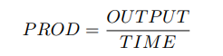 with OUTPUT as the total passing assert statements. TIME measures from the time the task is opened until closed.
8.5 Factors We Measure
The following is taken directly from Table 2.
Granularity: A fine-grained development process is characterized by a cycle duration typically between 5 and 10 minutes. A small value indicates a granular process. A large value indicates a coarse process.
Uniformity: A uniform development process is characterized by cycles having approximately the same duration. A value close to zero indicates a uniform process. A large value indicates a heterogeneous, or unsteady, process.
Sequencing: Indicates the prevalence of test-first sequencing during the development process. A value close to 100 indicates the use of a predominantly test-first dynamic. A value close to zero indicates a persistent violation of thre test-first dynamic.
Refactoring: Indicates the prevalence of the refactoring activity in the development process. A value close to zero indicates nearly no detectable refactoring activity (negligable refactoring effort). A value close to 100 indicates a process dominated by refactoring activity (high refactoring effort).
data <- read.csv("data/dissectionTDD/dataset.csv",sep=";")
head(data)## ID QLTY PROD GRA UNI SEQ REF
## 1 1 77.27 0.07 0.87 0.29 0.00 45.45
## 2 2 58.71 0.21 31.07 3.26 50.00 50.00
## 3 3 85.42 0.32 1.66 1.78 28.12 6.25
## 4 4 84.52 0.34 1.05 0.91 8.62 50.00
## 5 5 45.91 0.17 7.30 6.40 20.00 26.66
## 6 6 77.95 0.37 8.02 8.36 0.00 44.448.6 Descriptive Statistics
There is a difference between descriptive statistics and inferential statistics. Descriptive statistics describe properties of the data; such as means, ranges, and normality of the variables of interest. Inferential statistics will draw the actual conclusions about the data; reporting on correlations, hypothesis tests, and [**estimation of parameters]**](glossary.html#parameter). Inferential statistics helps to generalize about a larger population, that can go beyond the descriptive statistics of an immediate sample.
library(ggplot2)
#small function to generate colors for ggplot
gg_color_hue <- function(n) {
hues = seq(15, 375, length = n + 1)
hcl(h = hues, l = 65, c = 100)[1:n]
}
titles <- c("Quality","Productivity","Granularity","Uniformity","Sequencing","Refactoring")
#get some colors for each
cols = gg_color_hue(length(titles))
# loop to create 6 density plots to look at spread for each variable
loop <- 2:7
for( i in loop){
x <- data[[i]]
plt <- ggplot(data,aes(x)) +
ggtitle(paste("Histogram and Density for",titles[i-1]))+
geom_histogram(aes(y = ..density..), bins=25,color="black",fill=cols[i-1])+
geom_density(aes(y = ..density..),color="black",fill="black", alpha=.2,stat = 'density')+
xlab(titles[i-1])+
theme_bw()
print(plt)
print(shapiro.test(x))
}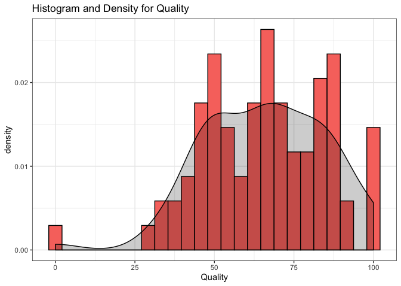
##
## Shapiro-Wilk normality test
##
## data: x
## W = 0.97198, p-value = 0.0695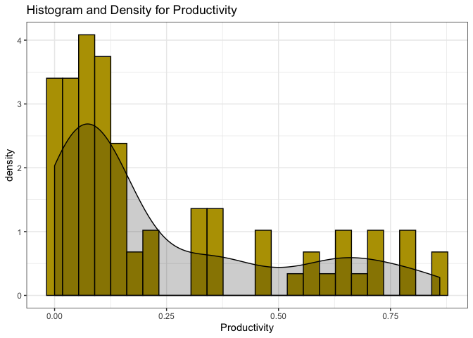
##
## Shapiro-Wilk normality test
##
## data: x
## W = 0.80645, p-value = 5.326e-09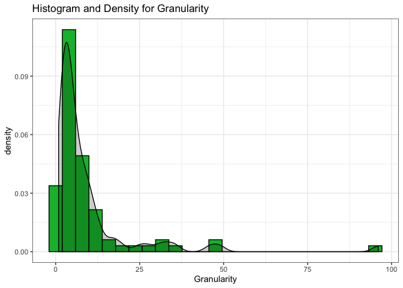
##
## Shapiro-Wilk normality test
##
## data: x
## W = 0.54482, p-value = 1.524e-14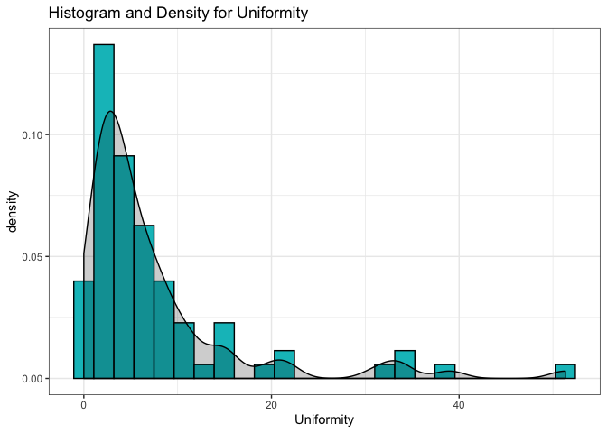
##
## Shapiro-Wilk normality test
##
## data: x
## W = 0.67565, p-value = 3.623e-12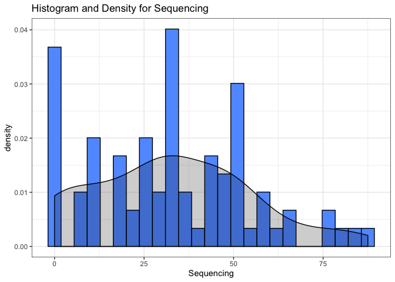
##
## Shapiro-Wilk normality test
##
## data: x
## W = 0.96182, p-value = 0.01545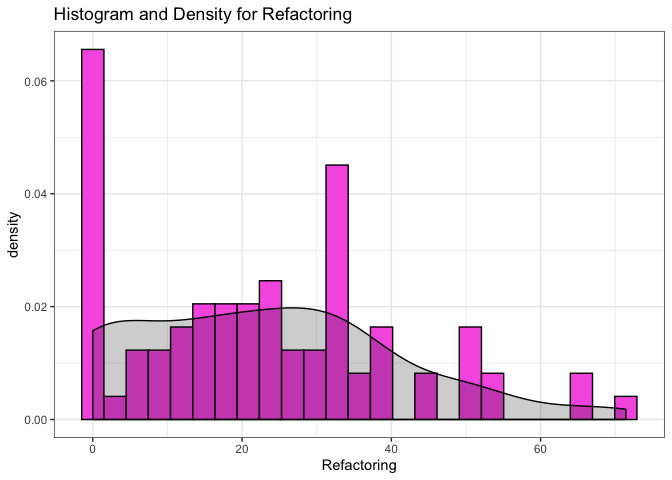
##
## Shapiro-Wilk normality test
##
## data: x
## W = 0.94084, p-value = 0.00090598.7 Let’s Talk About Models
Remember that we are looking for which features affect quality and productivity. Like many model setups, we have collected data and are looking for which features carry the most weight. That means, there are a bunch of factors affecting an outcome (like Productivity) and we want to know which ones matter the most. You might also simply be looking to record the weights on each of the features, not caring which ones “matter” but just trying to get an accurate representation of the phenomenon (say, what is affecting climate change, or what factors lead to higher rates of cancer?) When creating a model, we are looking to represent the various dynamics in the world that make something happen; we represent it so that we can understand it and predict it. In our scenario, we have quantitative measures for the following: Granularity, Uniformity, Sequencing, Refactoring, Quality, and Productivity. We want to know how GRA, UNI, SEQ, and REF are affecting our outcome variables: PRO and QLTY. Ideally, our objective would be to provide a conclusion like “The more refactoring you do, the better your code quality, and test-first is better for productivity” (not an actual conclusion of this paper). This paper keeps a certain tone throughout, emphasizing how we can use actual metrics to stop petty debates within the software world.
If you jump ahead to the Discussion, we know that the eventual findings are:
We conclude that granularity, uniformity and refactoring effort together constitute the best explanatory factors for external quality [and] productivity.
So what would that conclusion look like in model form? First off, the conclusion implies that SEQ does not matter, and is not even included in the best performing model. This is interesting, because so many people evangelize the Test-Driven Development technique! In fact, it’s not the sequencing of when you write the tests, but the level to which you iterate rapidly when writing code that affects quality and productivity. It could be the case that people attributed their success to the wrong factor: test-first or test-last, when in fact, iteration was key to success.
8.8 Regression Analysis vs. Hypothesis Testing
- explain how because theyre all continuous variables, we dont do hypothesis testing. we use regression TODO
m <- glm(QLTY ~ GRA + UNI + REF + SEQ +GRA:UNI+SEQ:REF, data=data)
m##
## Call: glm(formula = QLTY ~ GRA + UNI + REF + SEQ + GRA:UNI + SEQ:REF,
## data = data)
##
## Coefficients:
## (Intercept) GRA UNI REF SEQ
## 78.880246 -0.380340 -0.605808 -0.298070 0.012607
## GRA:UNI REF:SEQ
## 0.005605 0.001325
##
## Degrees of Freedom: 81 Total (i.e. Null); 75 Residual
## Null Deviance: 30130
## Residual Deviance: 24850 AIC: 717.2summary(m)##
## Call:
## glm(formula = QLTY ~ GRA + UNI + REF + SEQ + GRA:UNI + SEQ:REF,
## data = data)
##
## Deviance Residuals:
## Min 1Q Median 3Q Max
## -60.146 -12.889 0.459 12.631 32.976
##
## Coefficients:
## Estimate Std. Error t value Pr(>|t|)
## (Intercept) 78.880246 7.132852 11.059 <2e-16 ***
## GRA -0.380340 0.193825 -1.962 0.0534 .
## UNI -0.605808 0.489124 -1.239 0.2194
## REF -0.298070 0.190446 -1.565 0.1218
## SEQ 0.012607 0.137549 0.092 0.9272
## GRA:UNI 0.005605 0.013912 0.403 0.6882
## REF:SEQ 0.001325 0.005571 0.238 0.8126
## ---
## Signif. codes: 0 '***' 0.001 '**' 0.01 '*' 0.05 '.' 0.1 ' ' 1
##
## (Dispersion parameter for gaussian family taken to be 331.2695)
##
## Null deviance: 30129 on 81 degrees of freedom
## Residual deviance: 24845 on 75 degrees of freedom
## AIC: 717.23
##
## Number of Fisher Scoring iterations: 2AIC(m)## [1] 717.2294summary(lm(QLTY ~ GRA + UNI + REF + SEQ +GRA:UNI+SEQ:REF, data=data))$r.squared## [1] 0.1753826m <- glm(QLTY ~ GRA + UNI +REF, data=data)
#m
#summary(m)
AIC(m)## [1] 711.5502summary(lm(QLTY ~ GRA + UNI + REF + SEQ, data=data))$r.squared## [1] 0.17310518.9 Let’s Talk About Interactions
This paper mentions something called interactions. We will walk through a more basic example of what an interaction is before exploring what it means in this context. You can imagine a scenario where there is a categorical variable: test_first, which can take on either 1 or 0 if the developer tested first or last, respectively. Now imagine we also record whether developers are coding in the morning or the afternoon. It just so happens in our fake scenario, that if you test-first in the mornings, your quality skyrockets. If you test-first any other time, you don’t get the same effect. Therefore, there is an interaction between testing first and the time of day. This is problematic because if we don’t look into this interaction, we simply report a mean quality of somewhere in the middle; not accounting for how the test sequencing and time of day is affecting that quality. If there is an interaction, the lines in the categorical interaction plot will cross.
fake <- read.csv("data/fake_interaction.csv")
head(fake,10)## ID test_first QLTY morning
## 1 1 0 9 1
## 2 2 0 8 1
## 3 3 0 4 1
## 4 4 0 97 0
## 5 5 0 91 0
## 6 6 1 0 0
## 7 7 1 4 0
## 8 8 1 9 0
## 9 9 1 93 1
## 10 10 1 98 1fake$morning <- as.factor(fake$morning)
fake$test_first <- as.factor(fake$test_first)
interaction.plot(factor(fake$test_first),factor(fake$morning),fake$QLTY)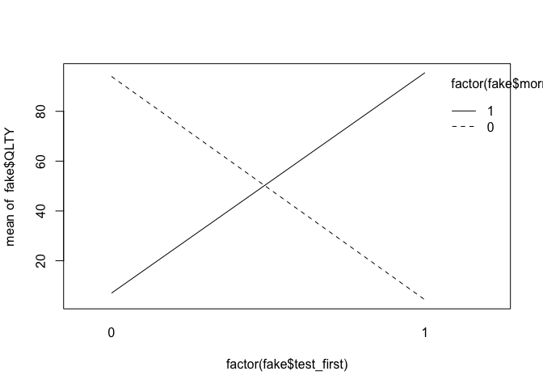
Take a look at the means when we do take into account the interaction, looking at both test_first and morning as contributing to QLTY. If we only look at one or the other, our means are misleading, because clearly there is another factor affecting the code quality! Sure, we could say that on average the code quality is somewhere in the middle; but it’s disingenuous because the truth is that your code quality will suffer if you’re using test_first in the afternoon. (In this FAKE DATA, of course). In order to truly represent the phenomenon, we have to include results about the interaction.
fake %>%
group_by(test_first,morning) %>%
summarise(mean=mean(QLTY))## # A tibble: 4 x 3
## # Groups: test_first [2]
## test_first morning mean
## <fct> <fct> <dbl>
## 1 0 0 94
## 2 0 1 7
## 3 1 0 4.33
## 4 1 1 95.5fake %>%
group_by(test_first) %>%
summarise(mean=mean(QLTY))## # A tibble: 2 x 2
## test_first mean
## <fct> <dbl>
## 1 0 41.8
## 2 1 40.8fake %>%
group_by(morning) %>%
summarise(mean=mean(QLTY))## # A tibble: 2 x 2
## morning mean
## <fct> <dbl>
## 1 0 40.2
## 2 1 42.48.10 Component + Residual Plots
library(car)
m<-glm(QLTY~GRA+UNI+REF,data=data)
crPlots(m)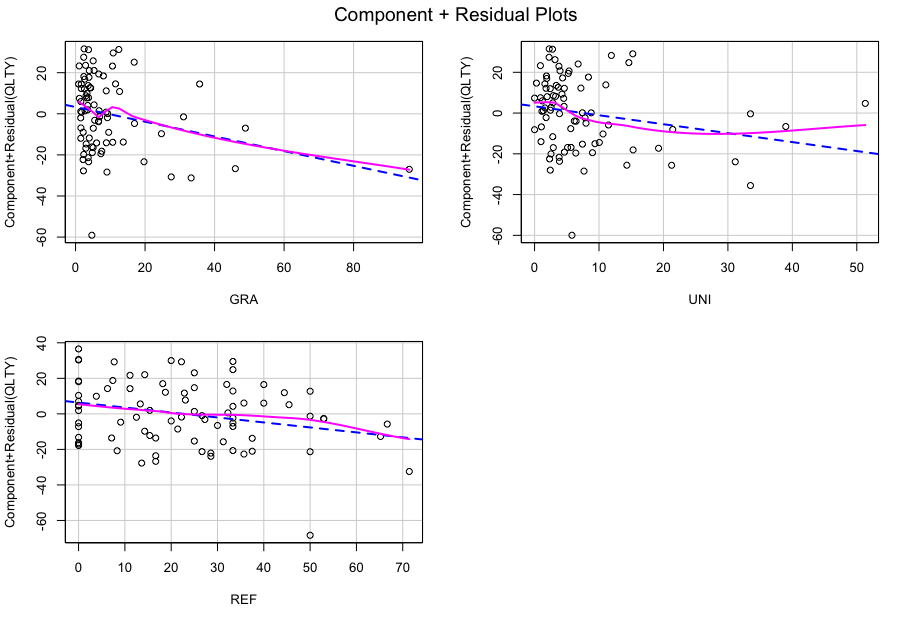
8.11 Interpreting Regression Output
Here I’ve used a general linear model to map out the factors affecting code quality. In the paper, they systematically included or excluded different factors and their interactions, in order to find the best fitting model. “Finding the best fitting model” means finding which combination of factors, and in what weights, best represents the relationship between those factors and the outcome we care about (quality or productivity). Remember, you could always add more and more factors to a model; the code will still output an answer. But it doesn’t mean it’s a correct model, or a useful one.
Looking at the final model used in the paper, we see that the factors kept were Granularity, Uniformity, and Refactoring in order to model Code Quality. This is particuarly interesting because Sequencing is not a factor in the model. The big question from software engineers was about test-first vs. test-last, but it turns out that it really doesn’t matter. The other factors are more important, and have a negative relationship with code quality. That negative relationship is because of how the measures were formulated; the closer to 0, the more granular and uniform the cycles were. So, the smaller the values for GRA, UNI and REF, the higher the value on QLTY. By looking at the output of the summary of the model, we see the Estimates as negative, and significant (or at least marginally significant). You can see significance by noting the number of stars (***) by each factor. (.) indicates a marginal trend. The t value is also indicative of how large the effect is, with the absolute value of t indicating significance. All of those significance factors are basically saying “hey! these factors are contributing to this outcome in a meaningful way!”
summary(m)##
## Call:
## glm(formula = QLTY ~ GRA + UNI + REF, data = data)
##
## Deviance Residuals:
## Min 1Q Median 3Q Max
## -60.710 -13.641 0.358 11.733 32.454
##
## Coefficients:
## Estimate Std. Error t value Pr(>|t|)
## (Intercept) 78.9278 4.0694 19.395 <2e-16 ***
## GRA -0.3576 0.1690 -2.115 0.0376 *
## UNI -0.4391 0.2502 -1.754 0.0833 .
## REF -0.2799 0.1159 -2.416 0.0180 *
## ---
## Signif. codes: 0 '***' 0.001 '**' 0.01 '*' 0.05 '.' 0.1 ' ' 1
##
## (Dispersion parameter for gaussian family taken to be 319.7768)
##
## Null deviance: 30129 on 81 degrees of freedom
## Residual deviance: 24943 on 78 degrees of freedom
## AIC: 711.55
##
## Number of Fisher Scoring iterations: 28.12 Evaluating How Good a Model Is (AIC)
How do we determine which model is the “right” one? Well, there’s a few ways to do that. Sometimes, we simply look at how good the model is at predicting test data. In this case, we are using something called AIC (Akaike Information Criterion). This is a very specific way of evaluating a model that deals with preserving information. It’s interesting and cool, and strikes a nice balance between goodness of fit and simplicity (not throwing too many parameters into the model). It’s okay if that doesn’t make sense; just know that a lower AIC indicates a “better” model. Notice how if we include SEQ in the model, the AIC is higher.
print(AIC(m))## [1] 711.5502new_m <- glm(QLTY~GRA+UNI+REF+SEQ,data=data)
print(AIC(new_m))## [1] 713.4556